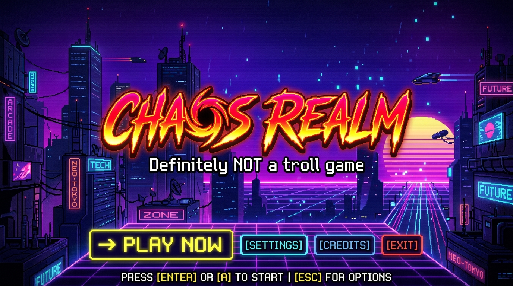
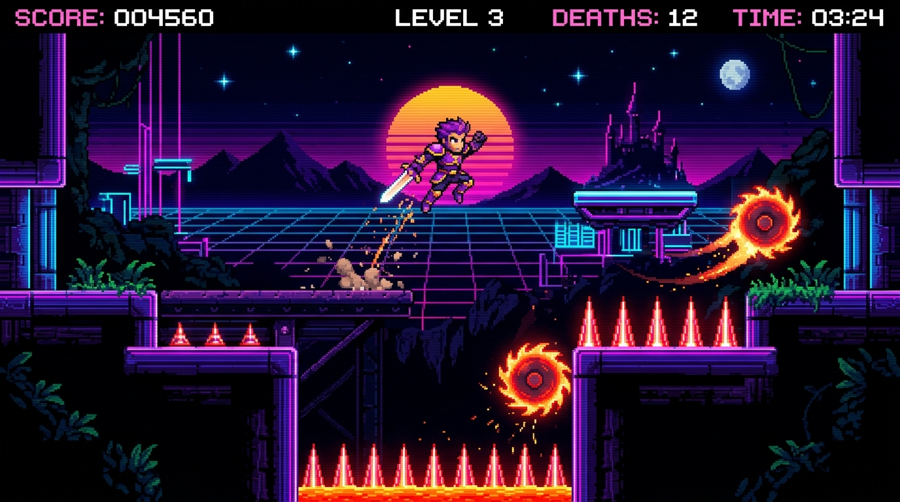
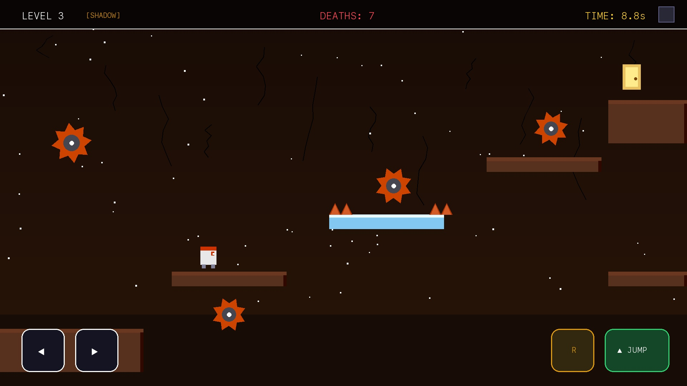
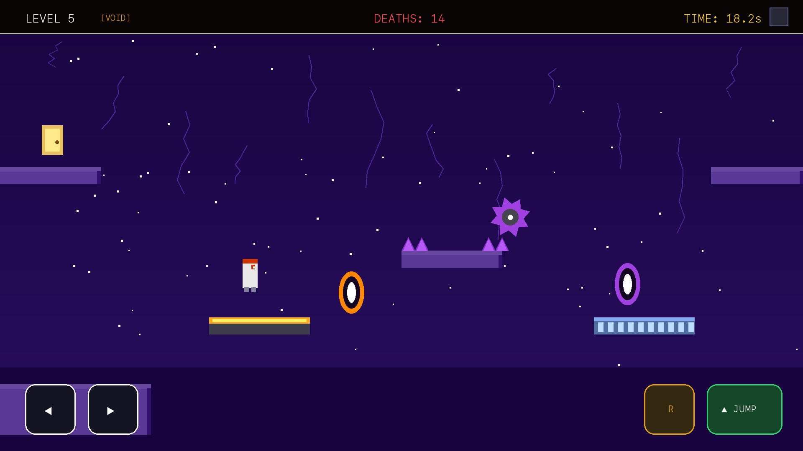

2.5D Stylized Visual Depth
Every level features custom multi-layer procedural depth: 3D sunlit top platform rims, front bevel extrusions, faceted metallic hazard spikes with lighting glints, and a real-time parallax desert background.
Where trust is your biggest weakness and questioning everything is the only way to survive.
Oops! is an indie deceptive puzzle-platformer designed to subvert classic platforming intuition. Navigate 30 handcrafted stages filled with vanishing sandstones, surprise pop-up spikes, boulder crushers, and mischievous exit doors that run away as soon as you leap toward them.
Inspired by notorious deceptive puzzle games like Level Devil, Oops! was created to challenge conventional platformer muscle memory. Instead of rewarding blind speedrunning, Oops! challenges you to observe subtle visual tells, predict trap triggers, and laugh every time an innocent-looking floor drops away.
Every level features custom multi-layer procedural depth: 3D sunlit top platform rims, front bevel extrusions, faceted metallic hazard spikes with lighting glints, and a real-time parallax desert background.
Zero algorithmic or procedural generation. Every single block, spike trigger, spring bounce, and crusher placement in World 1 was manually composed and tuned for a balanced, hilarious trial-and-error progression.
Powered by zero-dependency Web Audio API synthesis. Chiptune arpeggios, jump bleeps, crunching crusher thuds, and portal chimes are generated directly in browser math without heavy static audio file downloads.
Mastering the tight physics engine is key to surviving the deceptive traps of Oops!. The engine incorporates 0.1s coyote time (allowing you to jump briefly after leaving an edge) and 0.1s jump buffering for responsive acrobatic leaps.
| Move Left / Right | A / D or ← / → |
| Jump | W / Space / ↑ |
| Instant Level Restart | R |
| Toggle Fullscreen | ⛶ HUD Button |
| Level Select Map | 🗺️ Map Button |
| Directional Thumb Cluster | Touch ◀ or ▶ (supports smooth thumb sliding) |
| Primary Action | Large bottom-right ▲ JUMP button |
| Quick Restart | ↺ button on controls cluster & top deck |
| Level & Death Tracker | Single-line minimal top deck bar: WORLD 1 · LV X 💀 Y |
| Orientation Support | Seamless gameplay in both Portrait & Landscape modes |
World 1 serves as the complete, frozen baseline for Oops! v1.03. Each stage introduces new mechanical twists, testing your reflexes, patience, and problem-solving skills.
Learn fundamental running and jump physics while meeting the first sneaky pop-up ground spikes and vanishing sandstone ledges.
Navigate heavy drop crushers with glowing eye slits, precision leaps over subterranean pit hazards, and spring-loaded trampolines.
False safety reigns supreme. Exit doors sprout thrusters and flee on proximity, requiring fast mid-air directional redirects.
The ultimate test of precision platforming. Multi-tiered falling columns, staggered crushers, and the grand climax at Stage 30!
Built purely with modern web standards, Oops! delivers a console-quality 60 FPS indie experience directly in any browser.
No app store download, no plugins. Built on lightweight Phaser 3 with instant local script execution and progressive asset caching.
Stuck on a punishing stage? After 7 deaths on the same level, an optional one-time rewarded video offer appears to skip ahead, or you can decline and keep trying with a persistent HUD skip button.
Highest stage unlocked, total death counters, and world progress are securely saved in browser storage so you can pick up where you left off.
Install directly to your phone's homescreen via Progressive Web App descriptors, or build as a native Android APK via Capacitor 5.
Authentic captures directly from live gameplay in the Oops! engine.




Common questions from players about gameplay, devices, and monetization.
Yes, 100%! Oops! is completely free to play in any modern desktop or mobile browser. There are no paywalls, subscriptions, or pay-to-win microtransactions.
In the current v1.03 release, World 1 (Desert Ruins) contains 30 individually handcrafted stages. All 30 stages are completely distinct with zero procedural repetition.
Absolutely. Oops! includes a responsive on-screen touch gamepad with directional slide clusters, jump button, and quick restart that automatically adapts to both portrait and landscape screen orientations.
If you find yourself stuck and accumulate 7 deaths on the same level, an optional rewarded ad prompt appears. Watching a short video skips the level. If you decline, a persistent [📺 SKIP] button remains available on the HUD if you change your mind.
No personal account is required to play. Level progress and death counts are stored locally on your device via HTML5 LocalStorage. Advertising is served via Google AdSense compliant with GDPR/EEA user consent choices.
You can use the in-game "💬 Report" button or contact developer Khalid Abdullah directly via email at seamafridi123456789@gmail.com.
Transparent development status for upcoming multiverse expansions.
30 handcrafted levels featuring sandstone crumble, pop-up ground spikes, crushing hammers, spring trampolines, and fleeing exit portals. Available now.
Planned future expansion featuring low-friction ice momentum physics, falling icicle projectiles, blizzard fog shaders, and 50 new handcrafted puzzle stages.
Future thematic world featuring obsidian caverns, laser tripwires, torchlight visibility mechanics, and inverted gravity fields.
Oops! is an independent game project built to explore high-performance 2D/2.5D canvas physics, procedural audio synthesis, and responsive mobile gamepad UI. Inquiries, feedback, and collaborations are warmly welcome.